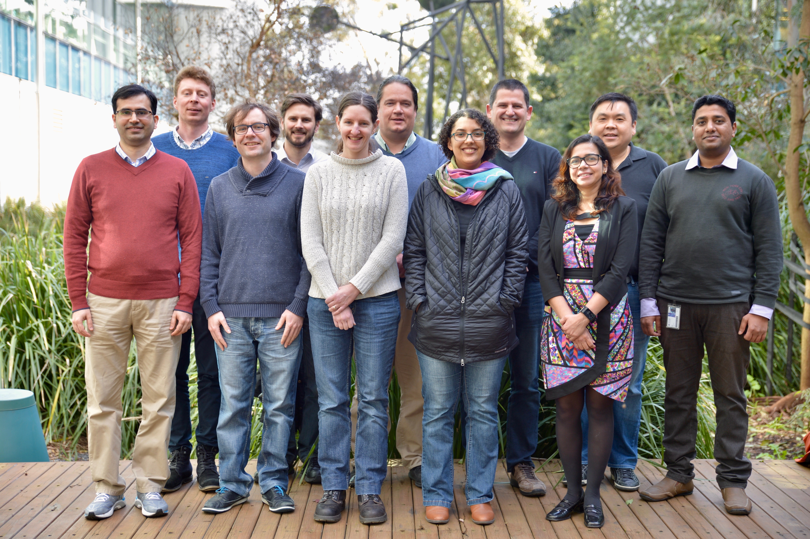

RNAsik for RNAseq
N.B This workflow assumes model organism has a reference genome. If the reference genome isn't applicable, different workflow is required.
About
RNAsik pipeline was build in house for processing RNA-seq(uencing) data. It is written in BigDataScript (bds), which is domain specific language (DSL), that makes writing pipelines easy as well as making them robust. To get a bit more technical, bds runs on java virtual machine (JVM) and therefore requires Java.
In simple terms any pipeline is a wrapper of several tools that makes it easier and arguably faster to get to the end goal. The three core parts to any RNA-seq analysis are:
- mapping to the reference genome
- counting reads mapped into features e.g genes
- doing differential expression (DE) statistics
The pipeline does the first two parts and Degust does the third part. Degust itself, in simple terms, a wrapper around limma and edgeR R packages. In theory and practice one can take output from RNAsik pipeline, which is a table of counts where every gene is a row and every column is a sample and use those with any other R packages that do DE analysis.
In actual terms both RNAsik and Degust provide complete experience, not only you'll get your list of DE genes and QC metrics, but will be able to get full inside into your experimental design and the outcome of that. RNAsik does read alignment and read counting and cleaning and improvements of your table of counts, which makes Degust analysis one upload away. RNAsik wraps these tools making your RNAseq analysis more streamline. It also has "sanity checks" inbuilt, checking command line options, checking if options are valid files/directories and it will talk to you so don't sweat :) but do read the error messages. Degust is exceptionally good for exploratory data visualisation and analysis. Both tools can also server as a nice proxy for learning bioinformatics as they provide command line and R code for doing the analysis. Last but not least thanks to MultiQC RNAsik provides an aggregate of different metrics in one place - multiqc report. This is a good place to start understanding your data.
The central bits of information are:
- Are there differences in library sizes?
- Is there any issues with mapping rates?
- Is there any issues with reads assignment rates?
However there is so many other questions you can ask including:
- What is duplication rate?
- What is multi-mapping rate?
- What is intragenic and interagenic rates?
As mentioned above multiqc report is a great first step in the attempt to answer those questions. A lot of the time everything looks fairly good and consistent allowing downstream analysis. Sometimes user can tweak certain individual parameters which can improve results, other times it comes down to experimental design and/or library preparation and sequencing issues. Either way one need to make this "first iteration" in order to see room for improvement.
How to cite
At the moment the only way to cite is point to github repository. I'm in the process of obtaining doi reference.
Tsyganov, K. Perry, A. Archer, S. Powell, D. (2018, January 25). RNAsik pipeline for RNA sequencing analysis. https://github.com/MonashBioinformaticsPlatform/RNAsik-pipe
It can be hard to give full acknowlegment to all contributors. The nature of the open source projects such that contributors can come and go, however they leave behind valuable contributions and need to get full credit for that. Please look at RNAsik GitHub repository to get a full sense of who is contributing. In particular one can look at number of commits, issues triaging and handling and pull requests (PRs). Please also remember that every contribution matters, nothing is too small!
MBP team photo
